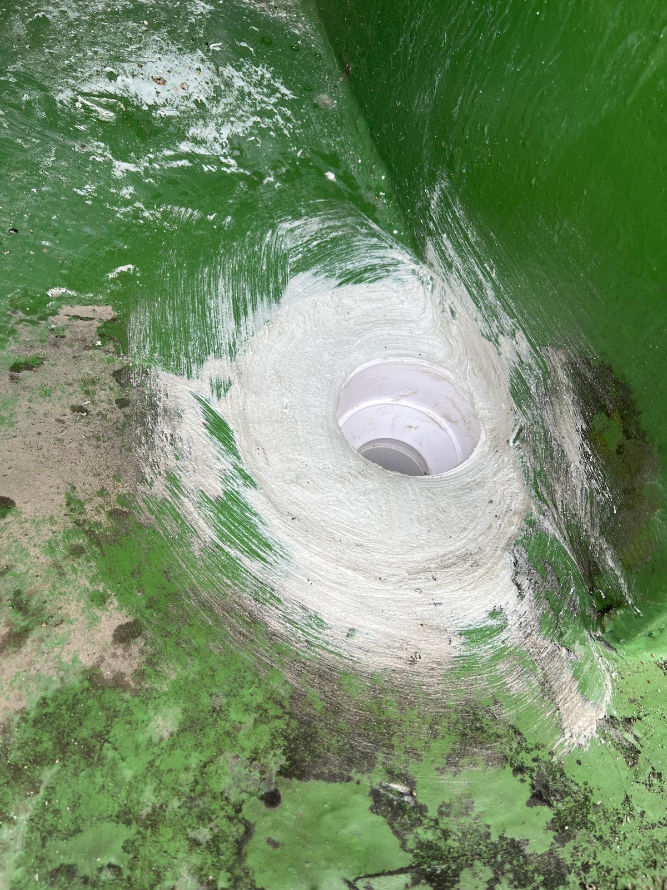
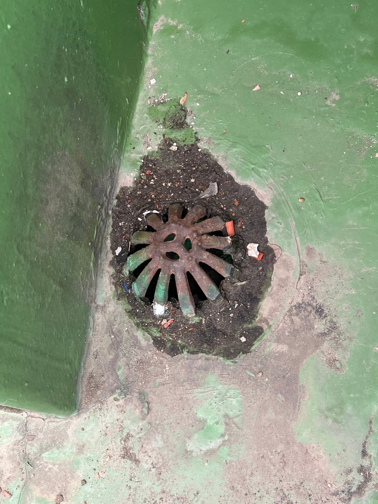
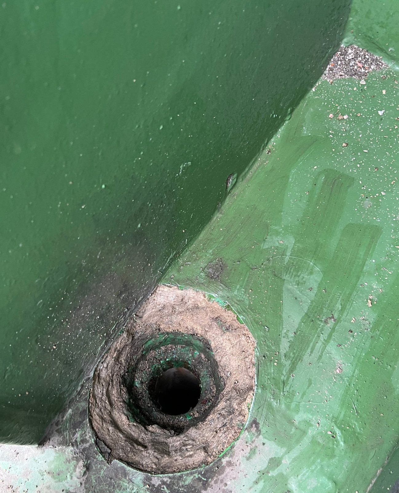
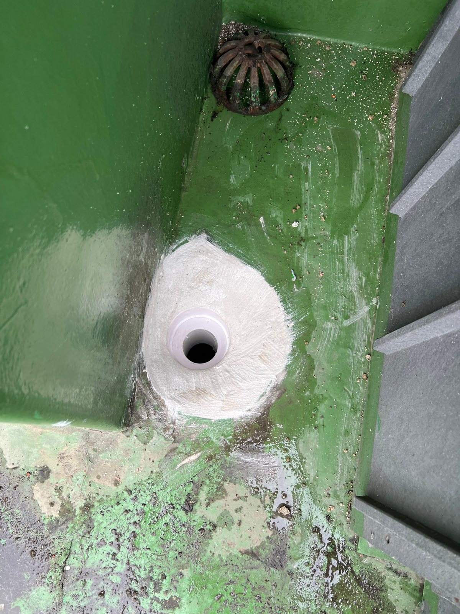
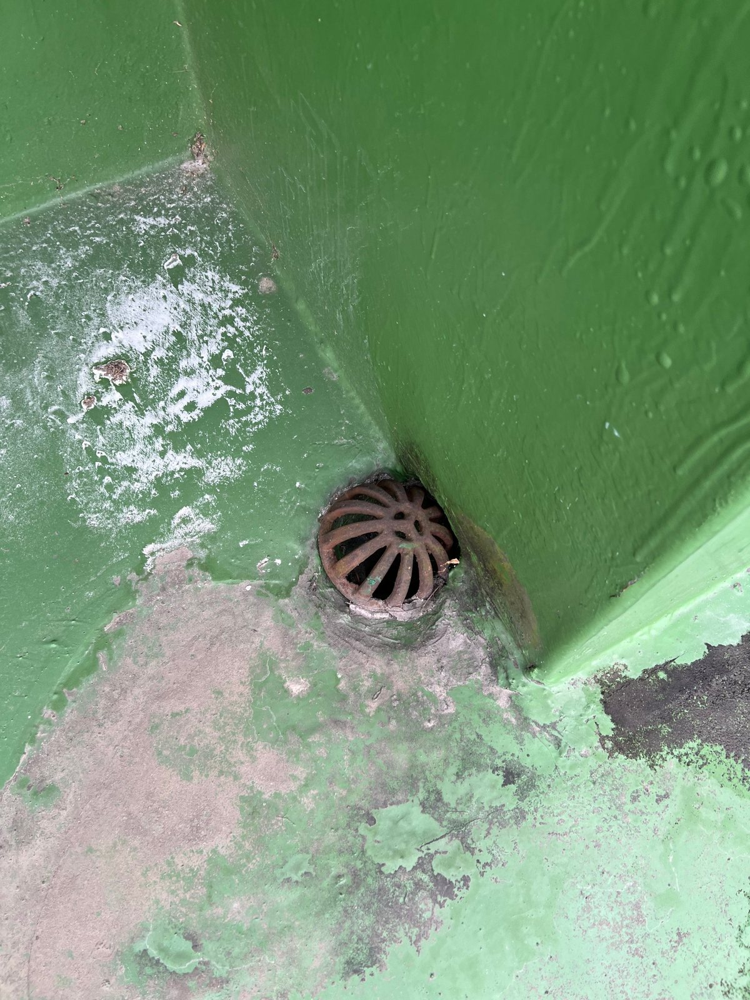
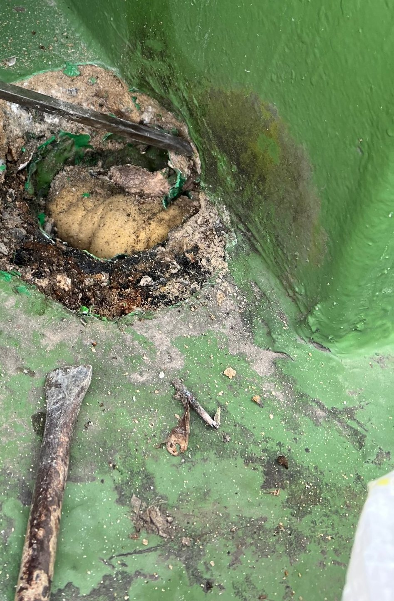
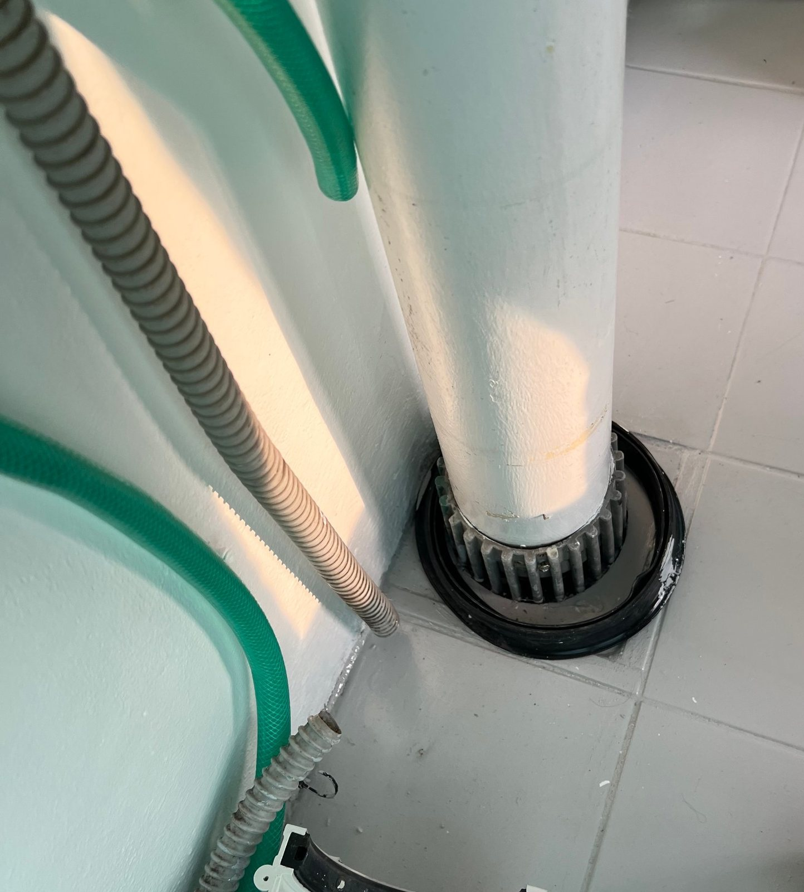
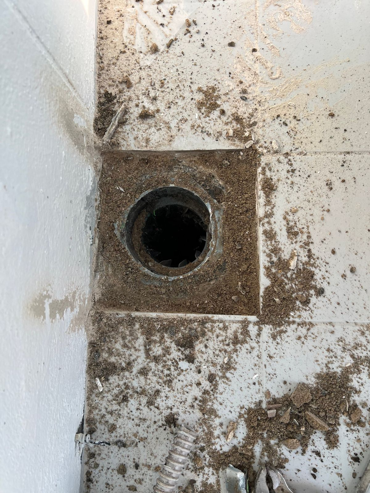
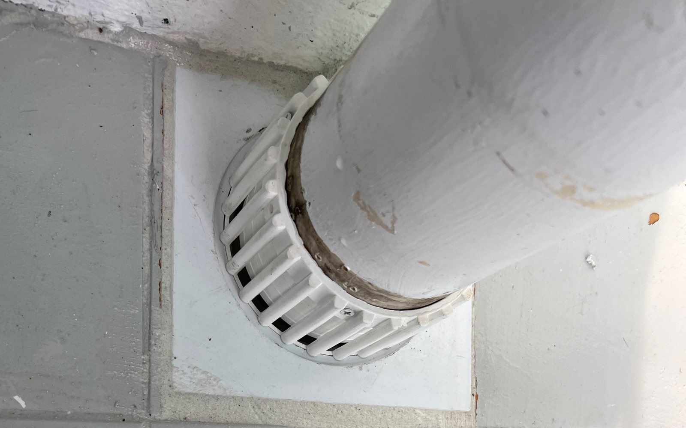

청주 용암동 태산그린아파트 옥상 배수구 2곳·앞베란다 우수관｜낡은 배수구를 새것으로

현장 작업 한눈에 보기
- 현장
- 청주 용암동 태산그린아파트 · 옥상 배수구 두 곳·앞베란다 우수관
- 문제
- 옥상 벽 모서리의 녹슨 주철 배수구 두 곳
앞베란다 우수관 바닥 쪽 하부 부속 - 작업
- 옥상: 기존 배수구 철거·새 배수구 몸체 설치·둘레 메움
앞베란다: 바닥 타일 부분 절단·하부 부속 교체·바닥 마감 - 결과
- 새 배수구와 새 하부 부속으로 마무리한 사진 확인
자재명·통수 결과·소요시간은 미기재
충북 청주시 상당구 용암동 태산그린아파트에서 같은 날 옥상 배수구 두 곳과 한 세대 앞베란다 우수관 바닥 쪽을 손봤습니다. 옥상은 녹슨 주철 배수구를 걷어 내고 새 배수구 몸체를 넣어 둘레를 메웠고, 앞베란다는 바닥 타일을 네모나게 잘라 우수관 하부 부속을 새것으로 바꿨습니다. 실제 사진 9장으로 소개합니다.
1. 첫 번째 옥상 배수구, 작업 전
충북 청주시 상당구 용암동 태산그린아파트에서 2026년 11월 13일에 옥상 배수구 두 곳과 한 세대 앞베란다 우수관 바닥 쪽을 손봤습니다. 곳마다 작업 전, 작업 중, 작업 후 순서로 사진을 소개합니다.
첫 번째 옥상 배수구입니다. 벽 모서리 옆 바닥 배수구에 녹슨 주철 뚜껑이 얹혀 있었고, 둘레에 흙과 부스러기가 쌓여 있었습니다.

2. 기존 배수구 걷어 내기
기존 배수구를 걷어 내고 둘레를 깨어, 아래로 이어지는 관 입구를 드러냈습니다.

3. 새 배수구 몸체 넣기
관 입구에 새 흰색 배수구 몸체를 넣고, 깨어 낸 둘레를 흰색 재료로 메웠습니다. 1번 사진과 비교해 보세요.

4. 두 번째 옥상 배수구, 작업 전
두 번째 옥상 배수구입니다. 벽 모서리에 붙은 배수구에 같은 모양의 녹슨 주철 뚜껑이 있었고, 둘레 바닥은 칠이 벗겨져 있었습니다.

5. 배수구 둘레 깨어 내기
배수구 둘레를 정으로 깨어 기존 배수구를 걷어 냈습니다.

6. 새 배수구 몸체와 둘레 메우기
새 흰색 배수구 몸체를 넣고, 둘레를 흰색 재료로 벽 모서리까지 넓게 펴 발랐습니다. 4번 사진과 비교해 보세요.
7. 앞베란다 우수관 바닥 쪽, 작업 전
같은 날 한 세대 앞베란다의 우수관 바닥 쪽입니다. 관 아래에 회색 살 모양 하부 부속이 검은 받침 위에 끼워져 있었습니다.

8. 바닥 타일 잘라 내기
하부 부속 둘레의 바닥 타일을 네모나게 잘라 내고, 안쪽 관 입구를 드러냈습니다.

9. 새 하부 부속으로 마무리
새 흰색 하부 부속을 끼우고, 잘라 낸 네모 자리를 흰색으로 다시 마감했습니다. 7번 사진과 비교해 보세요.

10. 확인한 범위와 상담 안내
이번 기록은 사진과 작업 일정으로 확인되는 범위입니다. 새 배수구와 하부 부속의 자재명, 둘레를 메운 재료, 통수 결과, 작업 시간은 자료가 없어 적지 않았습니다.
옥상 배수구에 흙이 쌓이거나 뚜껑이 삭아 보이면, 또는 베란다 우수관 바닥 쪽에 물 자국이 보이면 배수구 전체와 둘레 바닥을 각각 찍어 상담해 주세요.